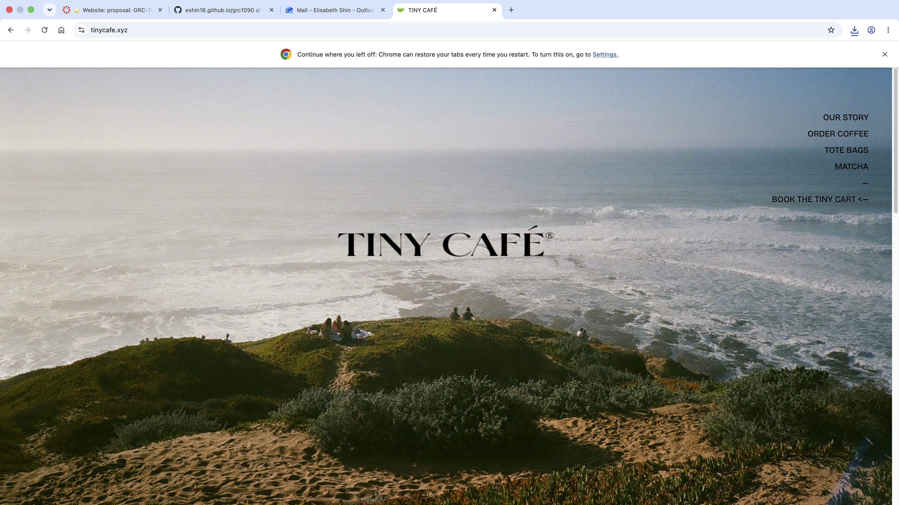
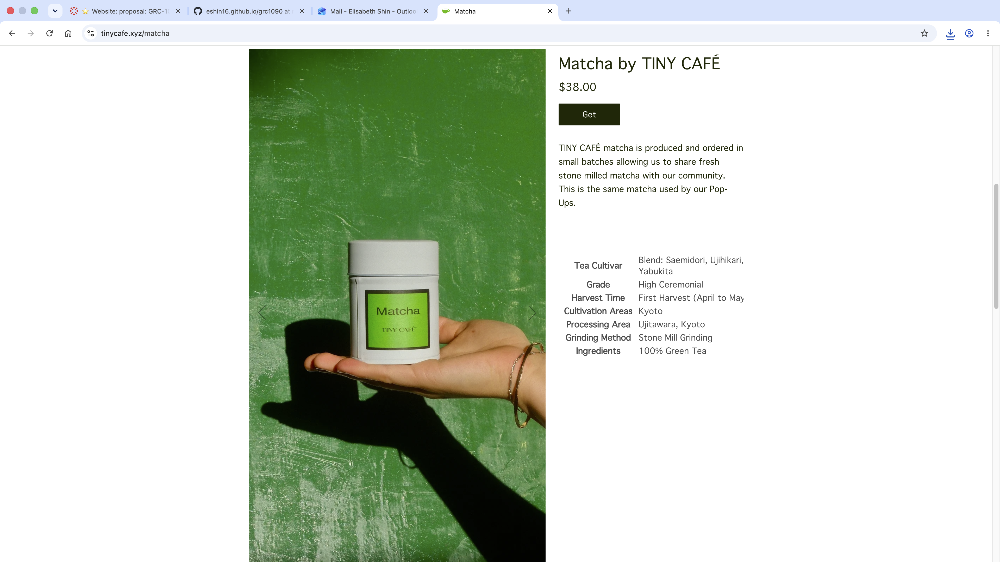
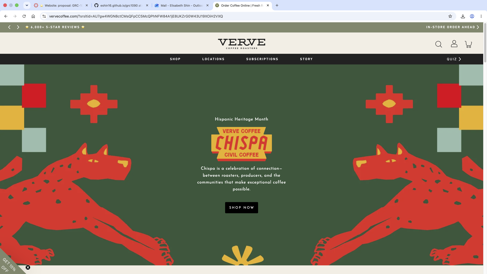
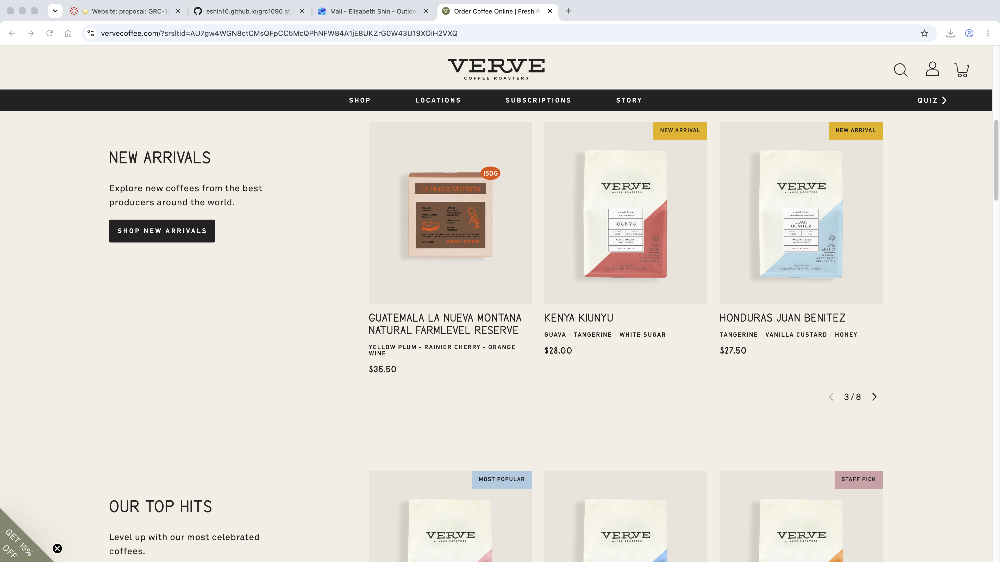
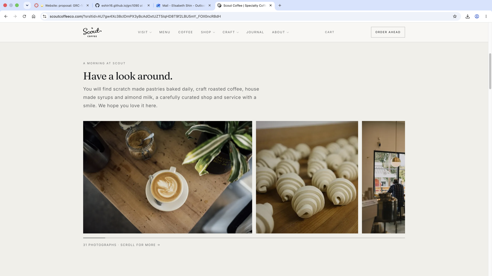
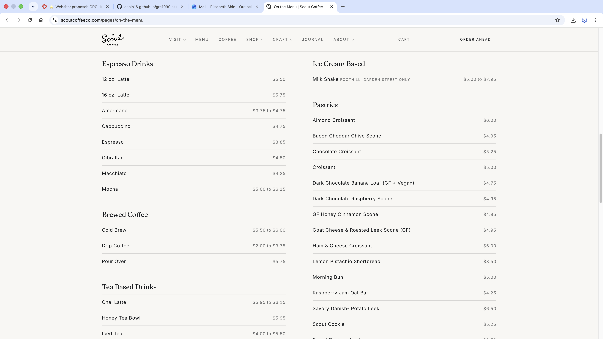

Lune Coffee
At Lune Coffee, every cup is made for anyone who enjoys great coffee, whether it is part of your daily routine or something you love to explore. We source and import high quality beans to create coffee for every taste, while offering a variety of teas and seasonal drinks for non-coffee or non-caffiene drinkers. Beyond beverages, you'll find sweet desserts and fresh breakfast favorites, including pastries, toasts, and sandwiches. We value our customers and community here at Lune Coffee, and want to provide a welcoming space to slow down, connect, and enjoy something made well.
Lume is a welcoming neighborhood cafe for everyone. Whether you are a college student looking for a caffeine boost and study spot, a family stopping in for coffee and a treat, or someone seeking a relaxed place to enjoy tea and conversation, there is something here for you.
We aim to create a comfortable, inclusive space where people of all ages can take a break, connect, and enjoy their favorite drinks and foods together.






Welcome to Lume Coffee, a welcoming neighborhood cafe for your everyday moments. From carefully sourced coffee and seasonal drinks to teas, pastries, toasts, and sandwiches, we have something for every craving. Stop in to recharge, catch up with friends, or simply slow down, and enjoy a drink made from love.
[Inside of the cafe.]
At Lume Coffee, we believe a great cafe should feel like it is made for everyone. We source high-quality beans to create thoughtful coffee for both everyday drinkers and coffee lovers, while offering a variety of teas and seasonal beverages for those who prefer something different.
[Staff that work at cafe.]
$6.75
A smooth espresso latte with milk of your choice, vanilla, and a hint of lavender.
$5.25
Slow-steeped coffee served over ice for a rich, smooth, and refreshing finish.
$5.75
Espresso and velvely steamed milk sweetened with honey and finished with warm cinnamon.
$5.50
Spiced chai blended with maple syrup and your choice of milk, cozy, lightly sweet, and caffeine friendly.
$4.25
A fragrant, floral green tea with a light and calming flavor.
$4.75
A refreshing herbal iced tea infused with hibiscus, mixed berries, and a bunch of citrus.
$9.50
Toasted sourdough topped with seasoned avocado, lemon, chili flakes, and a soft-boiled egg.
$8.75
A buttery Croissant filled with sliced ham, melted Swiss cheese, and Dijon mustard.
[Images of drinks.]
Address: 214 Luma Ave San Luis Obispo, CA 93401
[view of slo]